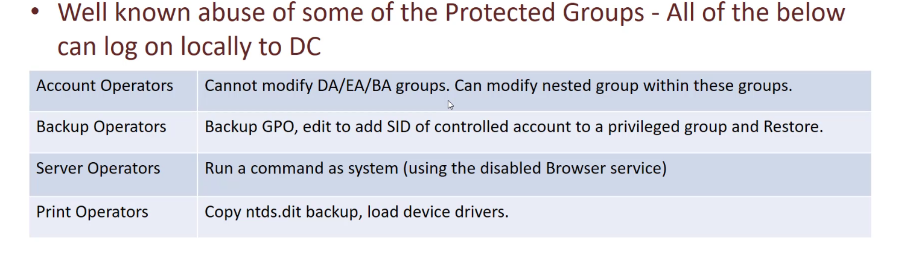

16- Exploit _protected groups

https://www.ired.team/offensive-security-experiments/active-directory-kerberos-abuse/privileged-accounts-and-token-privileges
AD Recycle Bin group
- AD Recycle Bin is a well-know Windows group. Active Directory Object Recovery (or Recycle Bin) is a feature added in Server 2008 to allow administrators to recover deleted items just like the recycle bin does for files
- query all deleted objects
Get-ADObject -filter 'isDeleted -eq $true -and name -ne "Deleted Objects"' -includeDeletedObjects- Get-ADObject -filter { SAMAccountName -eq "TempAdmin" } -includeDeletedObjects -property * // all the details of an object